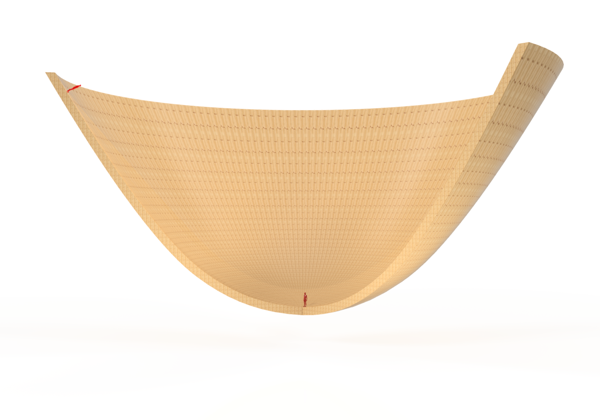

Barf Ball
November, 2015
There have been something like 20 World Cups, 50 Olympics, 70 NBA Championships, 50 Super Bowls, 100 World Series, and 500 Grand Slams. It may be time for something new. Something more difficult and never before seen. A warring sport requiring unearthly physical ability and high caliber intelligence. This is Barf Ball.
The sport is played on a rotating parabolic pitch of turf or wood with radius 30 m. The pitch must be fully enclosed, and all lighting and cameras must be in the rotating frame to ensure complete absorption in the new reality of the rotating frame. Rotation is set to roughly one revolution every 5 to 6 seconds, and the parabolic shape is defined to achieve a perpendicular apparent gravity at all points on the surface. There is a central disk, the speed disk, with 5 m radius; and an outer ring, the slow ring, with 5 meter width. The ball, a normal spherical ball, can be handled in any way. The game begins with the ball dropped centrally (it spirals down if dropped slightly off center from the Earth frame), with all players outside of the speed disk. Once the ball touches the pitch, players can enter the speed disk to contest initial possession. The ball must go from speed disk to slow ring and back to the speed disk in continuous possession to score a point, which does not reset possession or bring the game to any kind of pause. Barring fouls, gameplay is continuous during the two, twenty minute oppositely rotating halves. The sport is contact in the same way soccer or basketball is contact. There are fouls for excessive physicality, body blocking, body ramming, elbow poking, and foot kicking. Shirt removal is permissible. Fouls lead to change in possession at the location of the foul, with the offender having to start from the slow ring once gameplay recommences.
The game contains many physically unusual aspects arising from the rotary motion - more than can properly be predicted without actually experiencing such a pitch. What follows is a brief description of expected phenomena.
The centrifugal force increases linearly with increasing radius. But the design of the pitch, a parabola, is such that the centrifugal force and Earth’s gravity combine for an effective gravity that is perpendicular to the surface at all points on the pitch meaning a ball at rest will remain at rest. This is in contrast to a flat rotating pitch where the ball will roll outwards and opposite to the rotation). This is only true for a ball on the surface. Above the surface, a ball at rest will go outwards and down. The magnitude of the effective gravity is simply one gravity at the center of the pitch, but on the order of 1-2 gravities on the outer edges. Players will feel 1-2 times heavier depending on where they are on the pitch. Their bodies will be savagely overused in the high gravity outer regions and there is danger in prolonged stay.
In a non-rotating environment, the ball follows air dampened parabolic trajectories. But on a rotating pitch, the motion of the ball will be subject to Coriolis and centrifugal forces making the trajectories depend on direction, position, and velocity of the throw. In general, tangential passes in the direction of rotation will skew outwards while tangential passes opposite the direction of rotation will skew (or spiral) inwards. Passes towards the center will skew in the direction of rotation, while outward passes will skew against the rotation. Everything falls to pieces when one considers bounces and spin. Clearly, the physics is changed and rather more complex than what we are used to, yet still predictable and open to manipulation for cunning athletes. The figure below shows an example of throwing a ball vertically.

Standing will be simple, though with some additional weight and perhaps a bit of nausea. But running will be complicated. The same forces that affect ball trajectories will be addling the runner during his micro foot to foot trajectories. How will he choose his path? Will he be running at a slant? Will he notice differential centrifugal forces on his body? Will the barf puddles prove unmanageable? Only a complete and functioning prototype of the Barf Ball pitch will effectively answer these questions.
In operating the pitch, we have the option of applying a torque to conserve either rotation rate or energy. If we conserve rotation rate, the torque applied will counteract any changes in the moment of inertia and rotation rate will be constant. If we conserve energy, the distribution of mass on the rotating pitch will determine its moment of inertia, which then sets the rotation rate. Just as an ice skater pull in her arms for faster rotation, players could shift to the middle of the pitch to increase rotation or vice versa depending on strategic merit. I can imagine one team clustering to the center while the other team is in the slow ring in order to increase rotations and make the return from the slow ring more strenuous or even impossible. This facet of the game would require that the player’s weight has a significant effect on the moment of inertia, which means the pitch would need to be very light. Even so, the torque could be computer adjusted to amplify the rotational effects of changes in the moment of inertia so that even a small change in the moment of inertia could significantly change the rotation rate. But a non-computer system is preferable for physically instant feedback.
Barf Ball facilities will be expensive. Cost estimates might be based on rotating platforms used for carnival rides or radars. Rather than a physical demonstration, it may be more reasonable to develop a virtual game.
This game will be difficult as it forces players to redefine their physical intuition; an intuition shaped by years of living in a negligibly rotating environment. The change will too great for most. Severe disorientation would occur and only significant training, mental and physical, (and maybe a gastrectomy) would allow a player to function on the pitch. The player needs an sharp mind capable of making position and speed dependent decisions and an incredibly strong and resilient body to deal with extra gravity and high impact falls.
A sport must simulate war, require both strength and cunning, and most improtantly, provide the masses with glorious spectacle. Barf Ball is sport to an unprecedented degree. It is more warlike than soccer or football due to the overabundance of variables and physical hardship. It requires unearthly feats of strength and cunning unmatched in any other sport. And it is pure spectacle based on novelty, beauty, and the grotesque. Novelty comes from the rotating pitch and the physical contradiction of an unfamiliar physics. Beauty can be seen in the strangely curving trajectories, both breathtaking and unexpected. Finally, nausea and barf provide the grotesque, perhaps the most necessary component of memorable spectacle.
Lorenzo Venneri ©
lorenzo.venneri@gmail.com